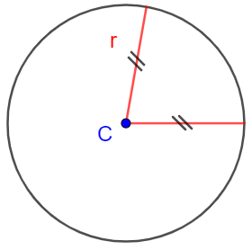

La circonferenza è l'insieme di tutti i punti equidistanti da un punto \(\color{blue}{C}\).
Il punto \(\color{blue}{C}\) è detto centro della circonferenza.
La distanza di ciascun punto dal centro è detta raggio (\(\color{red}{r}\) nella figura)

Cosa succede se considero una circonferenza nel piano cartesiano?
Come si traduce la proprietà che tutti i suoi punti possiedono (essere equidistanti dal centro) in termini
delle coordinate?
Consideriamo la circonferenza avente
"il punto \(P\) appartiene alla circonferenza"
"la distanza di \(P\) dal centro \(\color{blue}{C}\) è uguale ad \(\color{red}{r}\)"
Ma... noi conosciamo la formula della distanza tra due punti!
Quindi possiamo tradurre l'ultima affermazione in linguaggio algebrico:
\[
\underset{\color{gray}{}\text{la distanza di} \,\,\color{black}{P}\,\, \color{gray}{}\text{dal centro} \,\, \color{blue}{C}}{
\color{gray}{}
\underbrace{
\color{black}{}
\sqrt{
\left(x - \color{blue}{x_{_C}}\right)\color{black}{}^2
+
\left(y - \color{blue}{y_{_C}}\right)\color{black}{}^2
}
}
}
\underset{
\color{gray}{}\text{è uguale ad}\,\, \color{red}{r}
}{
\color{gray}{}
\underbrace{
\color{black}{}
\,\, = \,\, \color{transparent}{\sqrt{\color{red}{r}}}
}
}
\]
Svolgiamo un po' di calcoli.
Innanzitutto per eliminare la radice eleviamo entrambi i membri dell'equazione alla seconda:
\[
\left[\sqrt{\left(x - \color{blue}{}x_{_{C}}\color{black}{}\right)^2 + \left(y - \color{blue}{}y_{_{C}}\color{black}{}\right)^2}\right]^{2} = \color{red}{r}^{\color{black}{}2}
\]
\[
\Downarrow
\]
\[ \left(x - \color{blue}{}x_{_{C}}\color{black}{}\right)^2 + \left(y - \color{blue}{}y_{_{C}}\color{black}{}\right)^2 = \color{red}{r}^{\color{black}{}2} \]
Questa che abbiamo scritto è l'equazione della circonferenza
Data la circonferenza di centro \(\color{blue}{C}\color{black}{}\,\left(\color{blue}{}2\color{black}{}\,;\,\,\color{blue}{}-3\color{black}{}\right)\) e raggio \(\color{red}{r} \color{black}{\,=\,}\color{red}{5}\), l'equazione che descrive i suoi punti è \[ \left(x - \color{blue}{}2\color{black}{}\right)^2 + \left(y - \color{blue}{}\left(-3\right)\color{black}{}\right)^2 = \color{red}{5}^{\color{black}{}2} \] che svolti i calcoli diventa \[ \left(x - 2\right)^2 + \left(y + 3 \right)^2 = 25 \]
Consideriamo l'equazione della circonferenza
\[
\left(x + 1\right)^2 + \left(y - 2\right)^2 = 9
\]
A partire da essa possiamo dedurre le coordinate del centro \(\color{blue}{C}\) ed il raggio \(\color{red}{r}\).
Infatti guardando l'equazione della circonferenza notiamo che
\[ \underset{ \,\,\,\,\,\,\,\,\,\,\,\color{gray}{}\text{opposto}\,x_{_C} \quad\quad\quad \color{gray}{}\text{opposto}\,y_{_C}\,\,\,\,\,\,\,\text{quadrato di r} }{ \left(x \,\,\color{gray}{\underbrace{\color{black}{} -\,\, \color{blue}{}x_{_{C}}}}\color{black}{}\right)^2 + \left(y \,\,\color{gray}{\underbrace{\color{black}{} -\,\, \color{blue}{}y_{_{C}}}}\color{black}{}\right)^2 = \color{gray}{}\underbrace{\color{red}{r}^{\color{black}{}2}} } \]
Di conseguenza dall'equazione \[ \underset{ \,\,\,\,\,\,\,\,\,\,\,\color{gray}{}\text{opposto}\,x_{_C} \quad\quad\quad \color{gray}{}\text{opposto}\,y_{_C}\,\,\,\,\,\,\,\text{quadrato di r} }{ \left(x \,\,\color{gray}{\underbrace{\color{black}{} +\,\, 1}}\color{black}{}\right)^2 + \left(y \,\,\color{gray}{\underbrace{\color{black}{} -\,\, 2}}\color{black}{}\right)^2 = \color{gray}{}\underbrace{\color{black}{9}} } \] leggiamo che
Concludiamo che l'equazione descrive una circonferenza di centro \(C\,\left(-1\,;\,\,2\right)\) e raggio \(r = 3\)